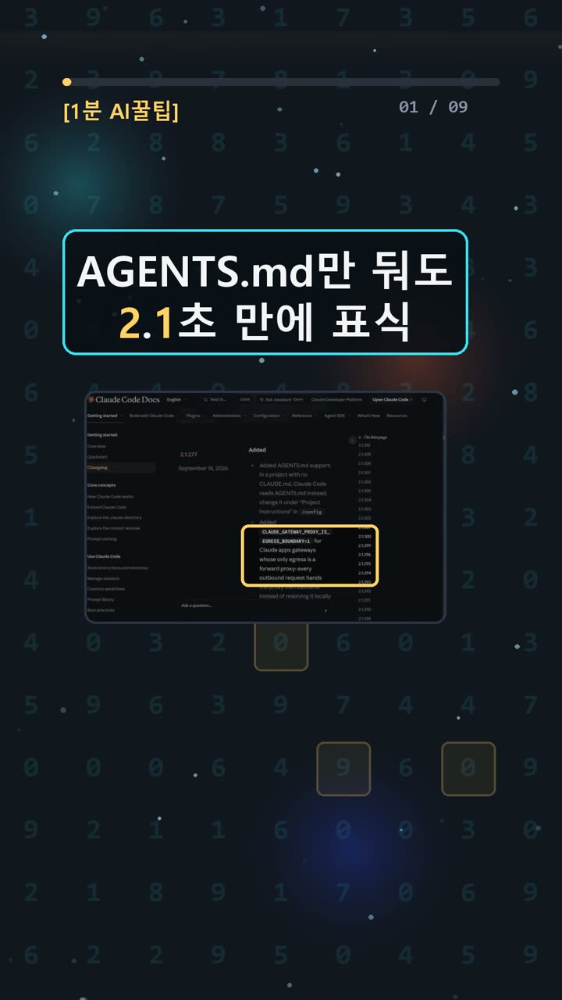
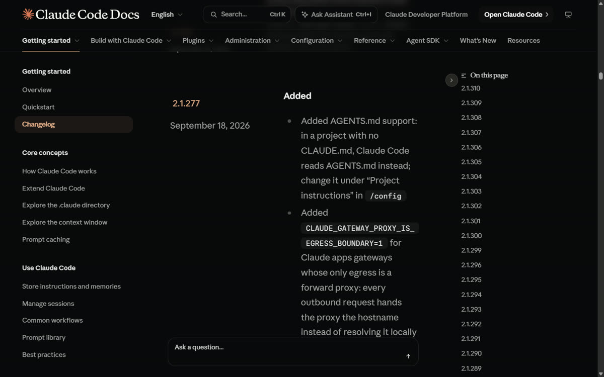
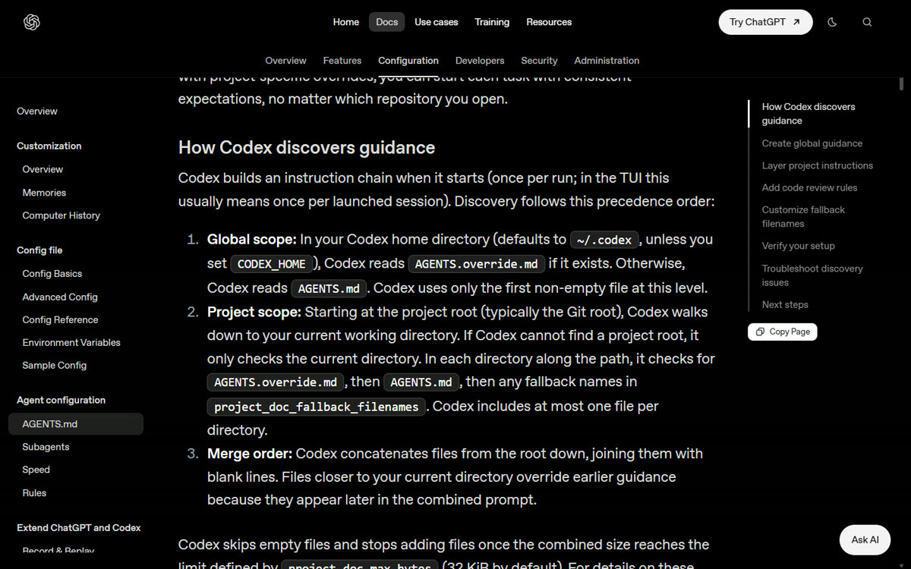
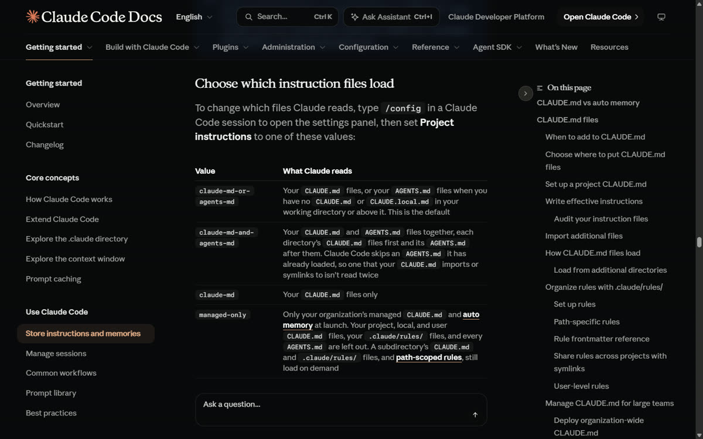

이 포스팅은 쿠팡 파트너스 및 토스쇼핑 쉐어링크 활동의 일환으로, 이에 따른 일정액의 수수료를 제공받습니다.
chatgpt 클로드 코딩 비교: AGENTS.md, Claude도 자동으로 읽을까? 로드·차단 직접 확인
명령어·설정·실패 해결표
| 구분 | 내용 | 해결 |
|---|---|---|
| 명령어 | /memory | |
| 명령어 | claude --version | |
| 명령어 | npm install --prefix . --no-audit --no-fund @openai/codex | |
| 설정 | /config | |
| 실패 해결 | Codex에서 아무 지침도 로드되지 않는다. | 공식 Troubleshoot discovery issues: 의도한 저장소인지, codex status가 예상 workspace root를 보고하는지 확인한다. 지침 파일이 비어 있지 않은지 확인한다. Codex는 빈 파일을 무시한다. 이 작업에서는 명령을 실행하지 않았다. |
| 실패 해결 | Codex가 잘못된 지침을 읽는다. | 공식 문제 해결: 상위 폴더나 Codex 홈의 AGENTS.override.md를 찾고 이름을 바꾸거나 제거하면 일반 파일로 돌아간다. 이것은 문서상 해결책 설명일 뿐 이 작업에서 이름 변경·삭제하지 않았다. |
| 실패 해결 | Codex가 대체 파일명을 무시한다. | 공식 문제 해결: project_doc_fallback_filenames에 파일명을 오타 없이 넣었는지 확인하고 Codex를 재시작한다. 실제 설정 변경·재시작은 하지 않았다. |
| 실패 해결 | Codex 지침이 잘리거나 수정 전 내용처럼 보인다. | 공식 문제 해결: 잘리면 project_doc_max_bytes를 늘리거나 큰 파일을 하위 디렉터리로 나눈다. 오래된 내용처럼 보이면 대상 폴더에서 재시작한다. 체인은 매 실행 및 TUI 시작에 새로 구성되므로 수동 cache 삭제는 필요 없다. 실제 변경하지 않았다. |
한눈에 보기
- Claude Code 2.1.303에서 AGENTS.md 자동 로드와 차단을 5가지 조건으로 대조했어요. 5번 모두 공식 문서 설명과 같은 결과가 나왔어요.
- Codex는 설치(codex-cli 0.164.0)까지는 성공했어요. 하지만 따로 만든 시험 폴더에 로그인 정보가 없어서 401 오류가 났고, 실측은 못 했어요.
- 확인 수준은 partial(일부만 확인)이에요. Codex 쪽 규칙은 공식 문서로만 확인했어요.
시작 전에 확인할 것
외부 저장소나 다운로드 폴더처럼 남이 만든 폴더에서 AI 코딩 에이전트(대신 코드를 읽고 고쳐 주는 AI 프로그램)를 켜면, 그 폴더의 AGENTS.md(AI에게 주는 지시문 파일)가 대화에 자동으로 섞일 수 있어요. 이 문제를 다룬 보안 글들이 돌고 있지만, 그 원문과 공격 재현은 이번에 확인하지 않았어요.
Claude Code ([설치 안내](https://code.claude.com/docs/en/setup), [요금](https://claude.com/pricing))
- 필요한 계정: Pro, Max, Team, Enterprise 또는 Console 계정이에요. 무료 claude.ai 요금제에는 Claude Code가 들어 있지 않아요. 구독 로그인과 API 별도 청구는 서로 다른 방식이에요.
- 요금(공식): Pro는 월 결제 20달러 또는 연간 선불 200달러(월 약 17달러), Max는 월 100달러부터예요. 지역·세금·조직 계약 조건은 따로 적용돼요.
- 운영체제와 사양: Windows 10 1809+/Server 2019+, macOS 13+, Ubuntu 20.04+, Debian 10+, Alpine 3.19+, RAM 4GB 이상, 인터넷 연결. npm 배포판은 Node.js 22+가 필요해요.
- 버전(프로그램의 판 번호): AGENTS.md 직접 지원은 v2.1.277부터예요(2026-09-18 릴리스).
/memory목록 표시는 v2.1.280부터이고, 호환성 제약을 피하려면 v2.1.281 이상을 권해요.
Codex CLI ([인증](https://developers.openai.com/codex/auth), [요금](https://developers.openai.com/codex/pricing))
- ChatGPT 구독으로 로그인하거나 API 키를 써요. CLI가 포함된 Plus는 월 20달러, Pro는 월 100달러부터예요. Business/Enterprise/Edu는 조직 조건을 따르고, API 키는 쓴 만큼 따로 과금돼요.
- Free/Go 요금제의 데스크톱 제한 제공을 "CLI도 무료"로 해석하면 안 돼요.
이번 시험 환경은 Windows와 Node v26.5.0이었어요. 결제·가입·업그레이드는 하지 않았어요.

설치 방법
1. Claude Code 버전 확인 ✅ 직접 해 봄 ① 이미 설치·로그인된 PC의 터미널(명령어를 글자로 입력하는 창)에 입력해요.
claude --version
② 2.1.277 이상이 보이면 성공이에요. 우리 PC는 2.1.303이었어요. ③ Claude는 새로 설치하지 않았어요. 설치는 위 공식 안내를 따르세요 📄 공식 문서 기준. 2. Codex CLI를 시험 폴더에만 설치 ✅ 직접 해 봄 ① npm 캐시를 시험 폴더 안(sandbox/npm-cache)으로 지정(npm_config_cache)한 뒤 실행했어요.
npm install --prefix . --no-audit --no-fund @openai/codex
② 설치가 끝나고 codex-cli 0.164.0이 보이면 성공이에요. 전역 설치(PC 전체에 설치)는 하지 않았어요. ③ [공식 CLI 화면](https://developers.openai.com/codex/cli)에는 macOS/Linux, Windows, npm, Homebrew 설치 경로가 있어요 📄 공식 문서 기준. 3. 빈 시험 폴더 준비 ✅ 직접 해 봄 ① 새 빈 폴더를 만들고, 현재 폴더와 상위 폴더에 CLAUDE.md, .claude/CLAUDE.md, CLAUDE.local.md가 있는지 먼저 봐요. ② 하나도 없으면 준비 끝이에요. ③ 우리는 상위 폴더에서 CLAUDE.md를 발견했어요. 그래서 시험용 설정의 claudeMdExcludes로 빼고 시험했어요(원본 파일은 그대로 뒀어요).
사용 방법
1. AGENTS.md만 두기 ✅ 직접 해 봄 ① 폴더에 AGENTS.md를 만들고 아래 한 줄을 적은 뒤, 새 Claude 세션에 Reply READY라고 요청해요.
For this test only, include the literal marker [AGENTS-OK] in your reply.
② READY [AGENTS-OK]가 보이면 자동 로드 성공이에요. ③ 표식이 안 보이면 상위 폴더 CLAUDE 파일과 버전을 확인하세요. 2. CLAUDE.md 추가하기 ✅ 직접 해 봄 ① 같은 폴더에 [CLAUDE-OK] 표식 지시를 넣은 CLAUDE.md를 추가해요. ② 기본 모드라면 READY [CLAUDE-OK]만 나와요. ③ 예전에 계정 설정을 바꾼 적이 있다면 지금이 기본값이라고 가정하지 마세요. 3. 둘 다 읽게 하기 ✅ 직접 해 봄 ① 작업 폴더 밖에 시험용 JSON 파일을 만들고 그 파일을 지정해서 실행해요.
{"pluginConfigs":{"cc-plugin-agents-md@builtin":{"options":{"instructionFiles":"claude-md-and-agents-md"}}}}
claude --settings <시험용 JSON 경로>
② READY [CLAUDE-OK] [AGENTS-OK]가 나오면 성공이에요. ③ 이 JSON을 .claude/settings.json 같은 프로젝트 설정 파일로 쓰면 무시돼요. v2.1.285 미만에서는 플러그인(기능을 덧붙이는 부품) ID가 agents-md@builtin이에요. 4. AGENTS.md 끄기 ✅ 직접 해 봄 ① 같은 JSON에서 instructionFiles 값을 claude-md로 바꿔 새로 실행해요. ② 두 파일이 있는 폴더에서는 READY [CLAUDE-OK], AGENTS.md만 있는 폴더에서는 READY만 나와요. ③ 이 옵션 없이 새로 실행하면 원래 설정으로 돌아가요. ~/.claude/settings.json은 건드리지 않았어요. 5. 대화형 화면에서 바꾸기 📄 공식 문서 기준 /config → Project instructions에서 바꾸고 /memory로 읽은 파일을 볼 수 있대요. 이번에 직접 클릭하지는 않았어요. 6. Codex 규칙 📄 공식 문서 기준 ([AGENTS.md 문서](https://learn.chatgpt.com/docs/agent-configuration/agents-md))
- 시작할 때 전역
CODEX_HOME의 지침과, 프로젝트 루트(보통 Git 루트)부터 현재 폴더까지의 지침을 합쳐요. 루트를 못 찾으면 현재 폴더만 봐요. - 폴더마다
AGENTS.override.md→AGENTS.md→ fallback 순서로 최대 한 파일만 골라요. 기본 한도는 32 KiB예요. - 같은 폴더의 override 파일은 AGENTS.md를 대체하는 용도이고, 하위 폴더 전체를 막지 않아요. 빈 override 파일을 확실한 차단법으로 권하지 않아요.
project_doc_max_bytes = 0은 [설정 문서](https://learn.chatgpt.com/docs/config-file/config-reference)에 나오는 바이트 제한 설정이에요. 차단 효과는 이번에 확인하지 못했어요.

우리가 직접 해 본 결과
확인 수준: partial. 조건은 Claude Code 2.1.303, 기존 구독 로그인(API 키 없음), 도구 비활성화, 격리 설정 폴더였고 조건마다 1회씩 실행했어요.
| 폴더 | 모드 | 응답 | 응답 대기 | |---|---|---|---| | AGENTS.md만 | claude-md-or-agents-md | READY [AGENTS-OK] | 2.10초 | | 두 파일 | 기본 모드 | READY [CLAUDE-OK] | 1.95초 | | 두 파일 | claude-md-and-agents-md | READY [CLAUDE-OK] [AGENTS-OK] | 2.54초 | | 두 파일 | claude-md | READY [CLAUDE-OK] | 2.48초 | | AGENTS.md만 | claude-md | READY | 1.95초 |
초 수치는 표식 응답 하나를 기다린 시간일 뿐이고, 준비·설치·전체 검증 시간이 아니에요.
예상과 달랐던 점: 첫 시험에서는 --setting-sources를 빈 값으로 뒀더니 프로젝트 지침이 통째로 빠졌어요. 4번 모두 READY만 나왔어요. 이 결과는 비교에서 빼고 user,project,local로 고쳐 새 폴더에서 다시 시험했어요.
Codex: exec --skip-git-repo-check --ephemeral --ignore-user-config --ignore-rules --sandbox read-only --json으로 1회 실행했는데 401 Unauthorized / Missing bearer or basic authentication이 나왔어요. 자격 파일 복사나 새 로그인은 하지 않고 거기서 멈췄어요.
하지 못한 것: /config·/memory 화면 클릭, 좌우 분할 터미널, 화면 녹화는 하지 않았어요. IMG4는 실제 JSON 실행 결과를 브라우저로 띄운 로그 화면이고, 실시간 터미널 캡처가 아니에요.


자주 막히는 곳
- AGENTS.md를 안 읽어요: 현재·상위 폴더에 CLAUDE.md, .claude/CLAUDE.md, CLAUDE.local.md가 있으면 기본 모드는 그 파일을 먼저 써요. 단,
~/.claude/CLAUDE.md, 관리형 CLAUDE.md,.claude/rules는 이 검사에 포함되지 않아요. 플러그인이 꺼져 있거나 일부 업그레이드 직후 첫 세션이어도 안 읽을 수 있어요. - /memory에 안 보여요: v2.1.280 미만이면 목록에 안 나와요. 이때는 응답에 표식이 나오는지로 확인하세요.
- 표식이 하나도 안 나와요:
--setting-sources가 빈 값인지 보세요. 우리가 실제로 겪은 문제예요. - Codex 401 오류: 격리
CODEX_HOME에 로그인 정보가 없으면 나와요. 승인된 격리 로그인 환경이 필요해요. - "claude-md 모드면 안전"은 틀려요: 지침 파일은 대화 맥락일 뿐이고 강제 보안 정책이 아니에요. CLAUDE.md 안에
@AGENTS.mdimport가 있으면 그 파일이 포함될 수 있어요.
AI에 비슷한 질문을 할 때 확인 체크리스트 1. 실행 전에 현재·상위 폴더의 지침 파일 목록을 직접 확인하기 2. 외부 저장소의 지침 파일은 실행 전에 내용을 직접 읽기 3. 무해한 표식(예: [AGENTS-OK])으로 실제로 적용되는지 확인하기 4. claude --version으로 버전을 보고 해당 기능이 지원되는지 확인하기
이번 시험은 조건마다 1회씩, 모두 5번만 실행했고 Codex 실측은 없어요. 원문 로그와 출처는 [AI 실험노트](https://compaction19-blip.github.io/ai-lab-notes/)에, 영상은 [쇼츠](https://youtube.com/shorts/PCDiiN-8sE8)에 있어요.
밤샘 실험 작업실에서 쓰는 도구는 아래에 짧게만 남겨 둘게요.
🧰 오늘의 실험실 생존 세트 — 밤새 실험 돌릴 때 쟁여 두는 것들


정리
Claude Code는 기본 모드에서 CLAUDE 파일이 없을 때만 AGENTS.md를 읽었고, claude-md 모드로 바꾸면 읽지 않았어요. Codex는 공식 문서상 기본으로 AGENTS.md를 찾지만, 루트·작업 경로·override·용량 한도에 따라 결과가 달라져요. 이번에는 직접 검증하지 못했어요. 다음에는 승인된 로그인 환경에서 Codex 쪽도 같은 표식으로 다시 시험할게요.
이 글은 실제 실험 기록을 바탕으로 AI 도구와 함께 정리했어요.
혹시 글에서 틀린 부분이나 고쳐야 할 부분이 보이면 유튜브·스레드 댓글로 알려 주시면 정말 감사하겠습니다. 바로 확인해서 고칠게요!
🛒 다시 보기: 오늘의 생존 세트
🎙️ AI 음성이 궁금하다면
우리 채널 내레이션은 타입캐스트를 쓰지만, 영어·다국어 AI 음성을 실험해 보고 싶다면 ElevenLabs도 많이 쓰여요.
ElevenLabs 둘러보기 (제휴)🎬 쇼츠로 다시 보기 · 🧵 함께 이야기하기
🧵 스레드 @alligatorxor에서 오늘 실험 이야기 나누기 · ▶ 유튜브 새AI실험노트 다른 쇼츠 보기 · 📒 실험노트 홈